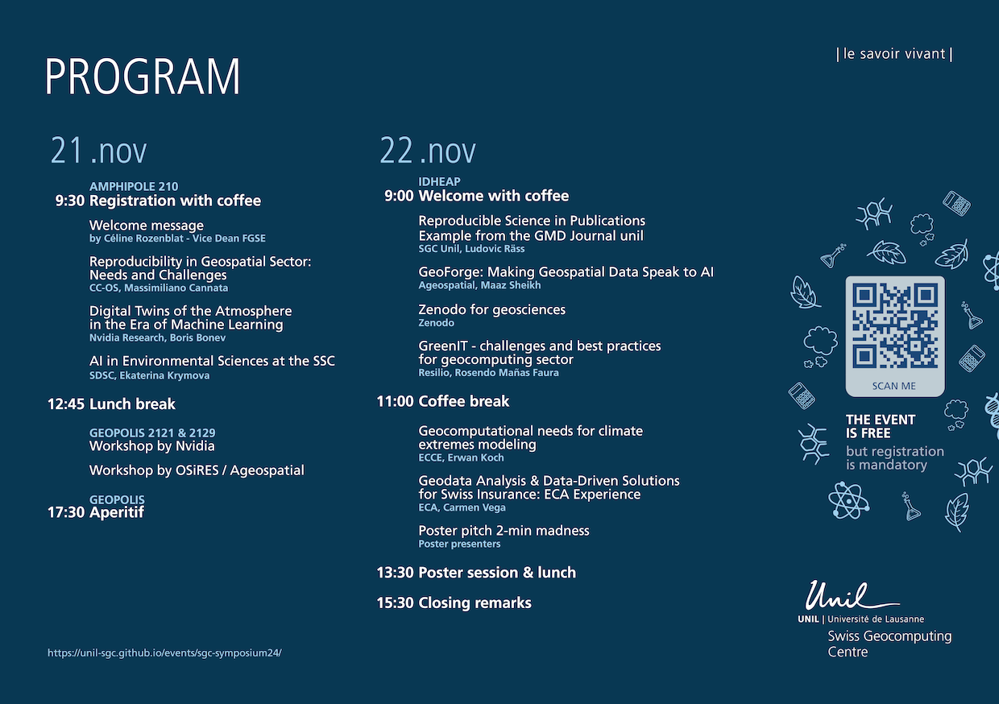
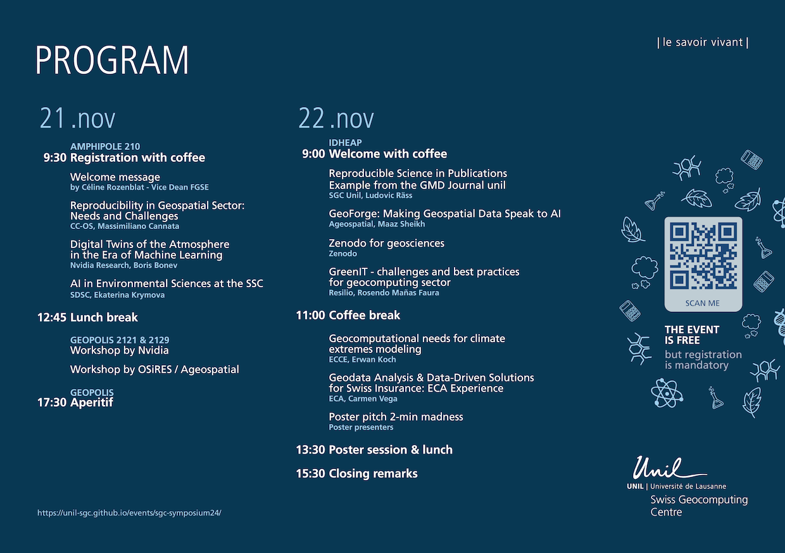

General information
The Swiss Geocomputing Centre (SGC) invites you to the symposium Bridging Modelling and Data Sciences in the Geosciences, taking place on November 21-22, 2024 at the University of Lausanne.
The event will feature engaging talks and workshops on topics tackling reproducibility in the geoscientific domain, integrating geospatial data into ML/AI workflows, geocomputation for weather and climate modelling, applications in the insurance domain, and green IT, amongst others.
This symposium aims to provide a dynamic venue for showcasing research, fostering interdisciplinary dialogue, and building connections between academia, industry, and public sectors. We welcome students and researchers to participate and invite you to contribute in a poster session.
Infos
🔎 Location: University of Lausanne (Amphipole, Geopolis, IDHEAP) -- on-site participation "only"
📅 Dates: 21-22 November 2024
✅ Registration (deadline 12 Nov. 24): Register here (the event is free but registration is mandatory)
Program
Day 1 - Thursday, 21 November 2024
| Time | Event |
|---|---|
| 9:30 - 10:00 | ☕ Registration with coffee (Amphipole 210) |
| 10:00 - 10:30 | Welcome message by Céline Rozenblat - Vice Dean FGSE |
| Keynote presentations (Amphipole 210) | |
| 10:30 - 11:15 | Reproducibility in Geospatial Sector: Needs and Challenges
CC-OS, Massimiliano Cannata |
| 11:15 - 12:00 | Digital Twins of the Atmosphere in the Era of Machine Learning
Nvidia Research, Boris Bonev |
| 12:00 - 12:45 | AI in Environmental Sciences at the SDSC
SDSC, Ekaterina Krymova |
| 12:45 - 13:45 | 🍝 Lunch break |
| 💻 Workshops (Geopolis) | |
| 14:00 - 17:30 | Nvidia (Geopolis 2121)
OSiRES/Ageospatial (Geopolis 2129) |
| 17:30 - 18:30 | 🍺 Aperitif |
Day 2 - Friday, 22 November 2024
| Time | Event |
|---|---|
| 9:00 - 9:15 | ☕ Welcome with coffee (IDHEAP) |
| 9:15 - 9:30 | Reproducible Science in Publications - Example from the GMD Journal
Unil - SGC, Ludovic Räss |
| Talks (IDHEAP) | |
| 9:30 - 10:00 | GeoForge - Making Geospatial Data Speak to AI
Ageospatial, Maaz Sheikh |
| 10:00 - 10:30 | Zenodo for geosciences
Zenodo, Lars Holm Nielsen (Head Open Science at CERN) |
| 10:30 - 11:00 | GreenIT - challenges and best practices for geocomputing sector
Resilio, Rosendo Mañas Faura |
| 11:00 - 11:30 | ☕ Coffee break |
| 11:30 - 12:00 | Geocomputational needs for climate extremes modeling
ECCE, Erwan Koch |
| 12:00 - 12:30 | Geodata Analysis & Data-Driven Solutions for Swiss Insurance: ECA Experience
ECA, Carmen Vega |
| Poster session (IDHEAP) | |
| 12:30 - 13:30 | Poster 2-minute madness |
| 13:30 - 15:30 | Poster session & 🍔 finger food |
| 15:30 - 16:00 | Closing remarks |
Workshops - Thursday, 21 November 2024
Nvidia
Unlocking the Power of Deep Learning for Weather Forecasting: A Hands-on Workshop with Earth-2
Details: The workshop provides a step-by-step overview of the fundamentals of deep neural networks, walks attendees through the hands-on experience of building and improving deep learning models applied to weather forecast using a framework that uses the fundamental laws of physics to model the behavior of complex systems, and enables attendees to visualize the physically accurate outputs of the trained model in near real-time.
Instructor: Abouzar Ghasemi
💡 Participants interested in joining this workshop will be required to register for that in order to have access to the GPU compute resources for the workshop.
OSiRES
Demonstrating the utilisation of geospatial webservices for reproducible research
Details: While modern Spatial Data Infrastructures (e.g. swisstopo or INSPIRE) use interoperable web services and open standards to serve large datasets, they lack the ability to retrieve geodata as it existed at a specific point in time, refer to its status at that instant, and ensure its immutability. OSIReS is a project co-financed by swissuniversities in the frame of its Programme Open Science I, Phase B, that aims at tackle this issue. In this workshop, after presenting the project during the Keynote session, we will demonstrate and discuss the needs and challenges regarding the utilisation of geospatial webservices for reproducible research.
Instructor: Ingensand Jens
Ageospatial
Building the future of GeoForge: An interactive workshop on Generative AI usage in geospatial data assisted disaster management.
Details: Participants will have the opportunity to test the GeoForge proof of concept. Ageospatial aims to gather valuable feedback and collaborate on ideas on how this future platform can provide real value in tackling current challenges, especially in disaster management and risk fields. We'll present use cases and invite participants to propose concrete improvements and suggest architectures for new AI frameworks such as Agentic AI systems, RAG concepts, and LangChain frameworks.
Instructor: Maaz Sheikh
Registration
The symposium is completely free of charge. On site, you will be able to attend any sessions you like, but for logistical reasons please indicate through the form which sessions you are interested in.
✅ Register here (deadline 12 Nov. 24) 👈
💡 Master-level students only. Note that registration is only open to students at the master-level and beyond.
❓ Questions. For any further question about the event, contact geocomputing@unil.ch
Posters
If you wish to present your past or ongoing research with a poster on Friday afternoon, please indicate so in the registration form. There are still many slots available for poster presentations. We encourage you to sign up and to re-use a poster you did present at a recent conference or event!
The poster session will be divided into two parts. First, each presenter will give a 2-minute presentation on a screen to introduce their research and provide context. For the remainder of the afternoon, attendees will be free to walk around, ask questions, and create network connections.
Announce
 
